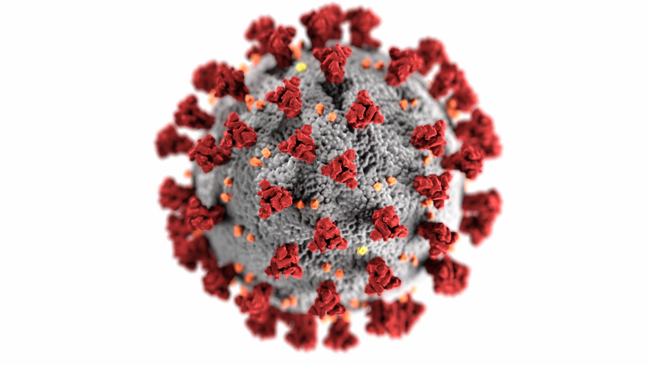

The COVID‑19 pandemic, also known as the coronavirus pandemic, is an ongoing global pandemic of coronavirus disease 2019 (COVID‑19), caused by severe acute respiratory syndrome coronavirus 2 (SARS‑CoV‑2).[1] The outbreak was first identified in Wuhan, China, in December 2019.[4][6] The World Health Organization declared the outbreak a Public Health Emergency of International Concern on 30 January 2020 and a pandemic on 11 March.[7][8] As of 22 July 2020, more than 15 million cases of COVID‑19 have been reported in more than 188 countries and territories, resulting in more than 617,000 deaths; more than 8.51 million people have recovered.[5]
The virus is primarily spread between people during close contact,[b] most often via small droplets produced by coughing,[c] sneezing, and talking.[9][10][12] The droplets usually fall to the ground or onto surfaces rather than travelling through air over long distances.[9][13] Transmission may also occur through smaller droplets that are able to stay suspended in the air for longer periods of time.[14] Less commonly, people may become infected by touching a contaminated surface and then touching their face.[9][10] It is most contagious during the first three days after the onset of symptoms, although spread is possible before symptoms appear, and from people who do not show symptoms.[9][10]
Common symptoms include fever, cough, fatigue, shortness of breath, and loss of sense of smell.[9][15][16] Complications may include pneumonia and acute respiratory distress syndrome.[17] The time from exposure to onset of symptoms is typically around five days but may range from two to fourteen days.[18][19] There is no known vaccine or specific antiviral treatment.[9] Primary treatment is symptomatic and supportive therapy.[20]
Recommended preventive measures include hand washing, covering one's mouth when coughing, maintaining distance from other people, wearing a face mask in public settings, disinfecting surfaces, increasing ventilation and air filtration indoors,[21] and monitoring and self-isolation for people who suspect they are infected.[9][22] Authorities worldwide have responded by implementing travel restrictions, lockdowns, workplace hazard controls, and facility closures. Many places have also worked to increase testing capacity and trace contacts of infected persons.

Countries with most Coronavirus cases
As of 7/28/2020
| Rank |
Country |
Total cases |
Total deaths |
| 1. |
The USA |
4,498,343 |
152,320 |
| 2. |
Brazil |
2,484,649 |
88,634 |
| 3. |
India |
1,532,135 |
34,224 |
| 4. |
Russia |
823,515 |
13,504 |
| 5. |
South America |
459,761 |
7,257 |
| 6. |
Mexico |
402,697 |
44,876 |
| 7. |
Peru |
395,005 |
18,612 |
| 8. |
Chile |
349,800 |
9,240 |
| 9. |
Spain |
327,690 |
28,436 |
| 10. |
United Kingdom |
300,692 |
45,878 |

Epidemiology
For country-level case and death data, see COVID-19 pandemic by country and territory.
Background
On 31 December 2019, the World Health Organization (WHO) detected reports of a cluster of viral pneumonia cases of unknown cause in Wuhan, Hubei,[34][35] and an investigation was launched at the start of January 2020.[36] On 30 January, the WHO declared the outbreak a Public Health Emergency of International Concern (PHEIC)—7,818 cases confirmed globally, affecting 19 countries in five WHO regions.[37][7]
Several early infected people had visited Huanan Seafood Wholesale Market;[38] the virus is therefore thought to be of zoonotic origin.[39] The virus that caused the outbreak is known as SARS‑CoV‑2, a newly discovered virus closely related to bat coronaviruses,[40] pangolin coronaviruses,[41][42] and SARS-CoV.[43] The scientific consensus is that COVID-19 has a natural origin.[44][45] The probable bat-to-human infection may have been among people processing bat carcasses and guano in the production of traditional Chinese medicines.[46]
The earliest known person with symptoms was later discovered to have fallen ill on 1 December 2019, and that person did not have visible connections with the later wet market cluster.[47][48] Of the early cluster of cases reported that month, two-thirds were found to have a link with the market.[49][50][51] On 13 March 2020, an unverified report from the South China Morning Post suggested a case traced back to 17 November 2019 (a 55-year-old from Hubei) may have been the first person infected.[52][53]
The WHO recognised the spread of COVID-19 as a pandemic on 11 March 2020[8] as Italy, Iran, South Korea, and Japan reported surging numbers of cases. The worldwide number of cases quickly thereafter surpassed those of China.[54]
Cases
Main articles: COVID-19 pandemic by country and territory and COVID-19 pandemic cases
Official case counts refer to the number of people who have been tested for COVID-19 and whose test has been confirmed positive according to official protocols.[55] As of 24 May, countries that publicised their testing data have typically performed many tests equal to 2.6 percent of their population, while no country has tested samples equal to more than 17.3 percent of its population.[56] Many countries, early on, had official policies to not test those with only mild symptoms.[57][58] An analysis of the early phase of the outbreak up to 23 January estimated 86 percent of COVID-19 infections had not been detected, and that these undocumented infections were the source for 79 percent of documented cases.[59] Several other studies, using a variety of methods, have estimated that numbers of infections in many countries are likely to be considerably greater than the reported cases.[60][61]
On 9 April 2020, preliminary results found that 15 percent of people tested in Gangelt, the centre of a major infection cluster in Germany, tested positive for antibodies.[62] Screening for COVID-19 in pregnant women in New York City, and blood donors in the Netherlands, has also found rates of positive antibody tests that may indicate more infections than reported.[63][64] Seroprevalence based estimates are conservative as some studies shown that persons with mild symptoms do not have detectable antibodies.[65] Some results (such as the Gangelt study) have received substantial press coverage without first passing through peer review.[66]
Analysis by age in China indicates that a relatively low proportion of cases occur in individuals under 20.[67] It is not clear whether this is because young people are less likely to be infected, or less likely to develop serious symptoms and seek medical attention and be tested.[68] A retrospective cohort study in China found that children were as likely to be infected as adults.[69] Countries that test more, relative to the number of deaths, have a younger age distribution of cases, relative to the wider population.[70]
Initial estimates of the basic reproduction number (R0) for COVID-19 in January were between 1.4 and 2.5,[71] but a subsequent analysis concluded that it may be about 5.7 (with a 95 percent confidence interval of 3.8 to 8.9).[72] R0 can vary across populations and is not to be confused with the effective reproduction number (commonly just called R), which takes into account effects such as social distancing and herd immunity. By mid-May 2020, the effective R was close to or below 1.0 in many countries, meaning the spread of the disease in these areas at that time was stable or decreasing.[73]
Deaths
Main articles: COVID-19 pandemic deaths and COVID-19 pandemic death rates by country
Further information: List of deaths due to COVID-19
Most people who contract COVID-19 recover. For those who do not, the time between the onset of symptoms and death usually ranges from 6 to 41 days, typically about 14 days.[77] As of 27 July 2020, approximately 649,000[5] deaths had been attributed to COVID-19. In China, as of 14 June, about 80 percent of deaths were recorded in those aged over 60, and 75 percent had pre-existing health conditions including cardiovascular diseases and diabetes.[78]
The first confirmed death was in Wuhan on 9 January 2020.[79] The first death outside of China occurred on 1 February in the Philippines,[80] and the first death outside Asia was in France on 14 February.[81]
Official deaths from COVID-19 generally refer to people who died after testing positive according to protocols. This may ignore deaths of people who die without having been tested.[82] Conversely, deaths of people who had underlying conditions may lead to overcounting.[83] Comparison of statistics for deaths for all causes versus the seasonal average indicates excess mortality in many countries.[84][85] In the worst affected areas, mortality has been several times higher than average. In New York City, deaths have been four times higher than average, in Paris twice as high, and in many European countries, deaths have been on average 20 to 30 percent higher than normal.[84] This excess mortality may include deaths due to strained healthcare systems and bans on elective surgery.[86]
Multiple measures are used to quantify mortality.[87] These numbers vary by region and over time, influenced by testing volume, healthcare system quality, treatment options, government response,[88][89][90] time since the initial outbreak, and population characteristics, such as age, sex, and overall health.[91] Some countries (like Belgium) include deaths from suspected cases of COVID-19, regardless of whether the person was tested, resulting in higher numbers compared to countries that include only test-confirmed cases.[92]
The death-to-case ratio reflects the number of deaths attributed to COVID-19 divided by the number of diagnosed cases within a given time interval. Based on Johns Hopkins University statistics, the global death-to-case ratio is 4.0 percent (649,662 deaths for 16,296,635 cases) as of 27 July 2020.[5] The number varies by region.[93]
Other measures include the case fatality rate (CFR), which reflects the percentage of diagnosed people who die from a disease, and the infection fatality rate (IFR), which reflects the percentage of infected (diagnosed and undiagnosed) who die from a disease. These statistics are not timebound and follow a specific population from infection through case resolution. Our World in Data states that as of 25 March 2020 the IFR cannot be accurately calculated as neither the total number of cases nor the total deaths, is known.[91] In February the Institute for Disease Modeling estimated the IFR as 0.94 percent (95-percent confidence interval 0.37–2.9), based on data from China.[94][95] The University of Oxford's Centre for Evidence-Based Medicine (CEBM) estimated a global CFR of 0.8 to 9.6 percent (last revised 30 April) and IFR of 0.10 percent to 0.41 percent (last revised 2 May), acknowledging that this will vary between populations due to differences in demographics.[96] The CDC estimates for planning purposes that the fatality rate among those who are symptomatic is 1.1 percent and that 40 percent of infected individuals are asymptomatic, for an overall infection fatality rate of 0.65 percent (0.5 to 0.8 percent).[97][98]
Duration
On 11 March 2020, the WHO said the pandemic could be controlled.[8] The peak and ultimate duration of the outbreak are uncertain and may differ by location. Maciej Boni of Penn State University said, "Left unchecked, infectious outbreaks typically plateau and then start to decline when the disease runs out of available hosts. But it's almost impossible to make any sensible projection right now about when that will be."[101] The Imperial College study led by Neil Ferguson stated that physical distancing and other measures will be required "until a vaccine becomes available (potentially 18 months or more)".[102] William Schaffner of Vanderbilt University said because the coronavirus is "so readily transmissible", it "might turn into a seasonal disease, making a comeback every year". The virulence of the comeback would depend on herd immunity and the extent of mutation.[103]
Signs and symptoms
Further information: Coronavirus disease 2019 § Signs and symptoms
The usual incubation period (the time between infection and symptom onset) ranges from one to 14 days, and is most commonly five days.[9][105] Some infected people have no symptoms, known as asymptomatic or presymptomatic carriers; transmission from such a carrier is considered possible.[106] As at 6 April, estimates of the asymptomatic ratio range widely from 5 to 80 percent.[107]
Symptoms of COVID-19 can be relatively non-specific; the two most common symptoms are fever (88 percent) and dry cough (68 percent). Less common symptoms include fatigue, respiratory sputum production (phlegm), loss of the sense of smell, loss of taste, shortness of breath, muscle and joint pain, sore throat, headache, chills, vomiting, coughing out blood, diarrhea, and rash.[108][17][16]
Among those who develop symptoms, approximately one in five may become more seriously ill and have difficulty breathing.[9] Emergency symptoms include difficulty breathing, persistent chest pain or pressure, sudden confusion, difficulty waking, and bluish face or lips; immediate medical attention is advised if these symptoms are present.[16] Further development of the disease can lead to complications including pneumonia, acute respiratory distress syndrome, sepsis, septic shock, and kidney failure.[17]
Cause
Transmission
COVID‑19 is a new disease, and many of the details of its spread are still under investigation.[9][10][12] It spreads easily between people—easier than influenza but not as easily as measles.[10] People are most infectious when they show symptoms (even mild or non-specific symptoms), but may be infectious for up to two days before symptoms appear (pre-symptomatic transmission).[12] They remain infectious an estimated seven to twelve days in moderate cases and an average of two weeks in severe cases.[12] People can also transmit the virus without showing any symptom (asymptomatic transmission), but it is unclear how often this happens.[9][10][12] A June 2020 review found that 40–45% of infected people are asymptomatic.[109]
COVID-19 spreads primarily when people are in close contact and one person inhales small droplets produced by an infected person (symptomatic or not) coughing, sneezing, talking, or singing.[12][110] The WHO recommends 1 metre (3 ft) of social distance;[9] the US Centers for Disease Control and Prevention (CDC) recommends 2 metres (6 ft).[10]
Transmission may also occur through aerosols, smaller droplets that are able to stay suspended in the air for longer periods of time.[14] Experimental results show the virus can survive in aerosol up to three hours.[111] Some outbreaks have also been reported in crowded and inadequately ventilated indoor locations where infected persons spend long periods of time (such as restaurants and nightclubs).[112] Aerosol transmission in such locations has not been ruled out.[14] Some medical procedures performed on COVID-19 patients in health facilities can generate those smaller droplets,[113] and result in the virus being transmitted more easily than normal.[9][12]
When the contaminated droplets fall to floors or surfaces they can, though less commonly, remain infectious if people touch contaminated surfaces and then their eyes, nose or mouth with unwashed hands.[9] On surfaces the amount of viable active virus decreases over time until it can no longer cause infection,[12] and surfaces are thought not to be the main way the virus spreads.[10] It is unknown what amount of virus on surfaces is required to cause infection via this method, but it can be detected for up to four hours on copper, up to one day on cardboard, and up to three days on plastic (polypropylene) and stainless steel (AISI 304).[12][114][115] Surfaces are easily decontaminated with household disinfectants which destroy the virus outside the human body or on the hands.[9] Disinfectants or bleach are not a treatment for COVID‑19, and cause health problems when not used properly, such as when used inside the human body.[116]
Sputum and saliva carry large amounts of virus.[9][10][12][117] Although COVID‑19 is not a sexually transmitted infection, direct contact such as kissing, intimate contact, and fecal–oral routes are suspected to transmit the virus.[118][119] The virus may occur in breast milk, but it's unknown whether it's infectious and transmittable to the baby.[120][121]
Estimates of the number of people infected by one person with COVID-19, the R0, have varied. The WHO's initial estimates of R0 were 1.4–2.5 (average 1.95), however an early April 2020 review found the basic R0 (without control measures) to be higher at 3.28 and the median R0 to be 2.79.[122]
Diagnosis
COVID-19 can provisionally be diagnosed on the basis of symptoms and confirmed using reverse transcription polymerase chain reaction (RT-PCR) testing of infected secretions or CT imaging of the chest.[126][127]
Viral testing
The standard test for current infection with SARS-CoV-2 uses RNA testing of respiratory secretions collected using a nasopharyngeal swab, though it is possible to test other samples. This test uses real-time rRT-PCR which detects the presence of viral RNA fragments.[128]
A number of laboratories and companies have developed serological tests, which detect antibodies produced by the body in response to infection.[129] Several have been evaluated by Public Health England and approved for use in the UK.[130]
On 22 June 2020, UK health secretary Matt Hancock announced the country would conduct a new "spit test" for COVID-19 on 14,000 key workers and their families in Southampton, having them spit in a pot, which was collected by Southampton University, with results expected within 48 hours. Hancock said the test was easier than using swabs, and could enable people to conduct it at home.[131]
Imaging
Characteristic imaging features on chest radiographs and computed tomography (CT) of people who are symptomatic include asymmetric peripheral ground-glass opacities without pleural effusions.[132] Many groups have created COVID-19 datasets that include imagery such as the Italian Radiological Society which has compiled an international online database of imaging findings for confirmed cases.[133] Due to overlap with other infections such as adenovirus, imaging without confirmation by rRT-PCR is of limited specificity in identifying COVID-19.[132] A large study in China compared chest CT results to PCR and demonstrated that though imaging is less specific for the infection, it is faster and more sensitive.[127]
Prevention
Further information: Workplace hazard controls for COVID-19, Pandemic prevention, preparations prior to COVID-19, COVID-19 surveillance, and COVID-19 apps
Strategies for preventing transmission of the disease include maintaining overall good personal hygiene, washing hands, avoiding touching the eyes, nose, or mouth with unwashed hands, and coughing or sneezing into a tissue, and putting the tissue directly into a waste container. Those who may already have the infection have been advised to wear a surgical mask in public.[134][135] Physical distancing measures are also recommended to prevent transmission.[136][137] Health care providers taking care of someone who may be infected are recommended to use standard precautions, contact precautions, and eye protection.[138][139]
Many governments have restricted or advised against all non-essential travel to and from areas affected by the outbreak.[140] The virus has already spread within communities in large parts of the world, with many not knowing where or how they were infected.[141]
Misconceptions are circulating about how to prevent infection; for example, rinsing the nose and gargling with mouthwash are not effective.[142] There is no COVID-19 vaccine, though many organisations are working to develop one.[143]
Hand washing
Main article: Hand washing
Hand washing is recommended to prevent the spread of the disease. The CDC recommends that people wash hands often with soap and water for at least twenty seconds, especially after going to the toilet or when hands are visibly dirty; before eating; and after blowing one's nose, coughing, or sneezing. This is because outside the human body, the virus is killed by household soap, which bursts its protective bubble.[22] CDC further recommended using an alcohol-based hand sanitiser with at least 60 percent alcohol by volume when soap and water are not readily available.[134] The WHO advises people to avoid touching the eyes, nose, or mouth with unwashed hands.[135][144] It is not clear whether washing hands with ash, if soap is not available, is effective at reducing the spread of viral infections.[145]
Social distancing
Main article: Social distancing measures related to the COVID-19 pandemic
Social distancing (also known as physical distancing) includes infection control actions intended to slow the spread of disease by minimising close contact between individuals. Methods include quarantines; travel restrictions; and the closing of schools, workplaces, stadiums, theatres, or shopping centres. Individuals may apply social distancing methods by staying at home, limiting travel, avoiding crowded areas, using no-contact greetings, and physically distancing themselves from others.[135][146][147] Many governments are now mandating or recommending social distancing in regions affected by the outbreak.[148][149] Non-cooperation with distancing measures in some areas has contributed to the further spread of the pandemic.[150]
The maximum gathering size recommended by U.S. government bodies and health organisations was swiftly reduced from 250 people (if there were no known COVID-19 spread in a region) to 50 people, and later to 10.[151] On 22 March 2020, Germany banned public gatherings of more than two people.[152] A Cochrane review found that early quarantine with other public health measures are effective in limiting the pandemic, but the best manner of adopting and relaxing policies are uncertain, as local conditions vary.[147]
Older adults and those with underlying medical conditions such as diabetes, heart disease, respiratory disease, hypertension, and compromised immune systems face increased risk of serious illness and complications and have been advised by the CDC to stay home as much as possible in areas of community outbreak.[153][154]
In late March 2020, the WHO and other health bodies began to replace the use of the term "social distancing" with "physical distancing", to clarify that the aim is to reduce physical contact while maintaining social connections, either virtually or at a distance. The use of the term "social distancing" had led to implications that people should engage in complete social isolation, rather than encouraging them to stay in contact through alternative means.[155][156] Some authorities have issued sexual health guidelines for the pandemic, which include recommendations to have sex only with someone you live with, and who does not have the virus or symptoms of the virus.[157][158]
Face masks and respiratory hygiene
Main article: Face masks during the COVID-19 pandemic
The CDC and WHO recommend individuals wear non-medical face coverings in public settings where there is an increased risk of transmission and where social distancing measures are difficult to maintain.[159][160][161] This recommendation is meant to reduce the spread of the disease by asymptomatic and pre-symtomatic individuals and is complementary to established preventive measures such as social distancing.[160][162] Face coverings limit the volume and travel distance of expiratory droplets dispersed when talking, breathing, and coughing.[160][162] Many countries and local jurisdictions encourage or mandate the use of face masks or cloth face coverings by members of the public to limit the spread of the virus.[163][164]
Masks are also strongly recommended for those who may have been infected and those taking care of someone who may have the disease.[165] When not wearing a mask, the CDC recommends covering the mouth and nose with a tissue when coughing or sneezing and recommends using the inside of the elbow if no tissue is available.[134] Proper hand hygiene after any cough or sneeze is encouraged.[134] Healthcare professionals interacting directly with COVID-19 patients are advised to use respirators at least as protective as NIOSH-certified N95 or equivalent, in addition to other personal protective equipment.[166]
Self-isolation
Self-isolation at home has been recommended for those diagnosed with COVID-19 and those who suspect they have been infected. Health agencies have issued detailed instructions for proper self-isolation.[168][169]
Many governments have mandated or recommended self-quarantine for entire populations.[170][171] The strongest self-quarantine instructions have been issued to those in high risk groups.[172] Those who may have been exposed to someone with COVID-19 and those who have recently travelled to a country or region with the widespread transmission have been advised to self-quarantine for 14 days from the time of last possible exposure.[9][18][173]
Surface cleaning
Surfaces may be decontaminated with a number of solutions (within one minute of exposure to the disinfectant for a stainless steel surface), including 62–71 percent ethanol, 50–100 percent isopropanol, 0.1 percent sodium hypochlorite, 0.5 percent hydrogen peroxide, and 0.2–7.5 percent povidone-iodine. Other solutions, such as benzalkonium chloride and chlorhexidine gluconate, are less effective.[174] Ultraviolet germicidal irradiation may also be used.[21] The CDC recommends that if a COVID-19 case is suspected or confirmed at a facility such as an office or day care, all areas such as offices, bathrooms, common areas, shared electronic equipment like tablets, touch screens, keyboards, remote controls, and ATM machines used by the ill persons should be disinfected.[175]
Ventilation and air filtration
The CDC recommends ventilation in public spaces to help clear out infectious aerosols, as well several others, including those regarding air filtration,[21][176][177] however doctors have been cautious about recommending air filtration due to the potentially very small size of virus particles, despite some filters labelled to remove viruses to the 5-micron level.[178] In July, researchers at the University of Houston said they had designed a filter using nickel foam which used heat to kill the virus.[179] Some experts have recommended UV light inside HVAC systems.[180]
Vaccine
Main article: COVID-19 vaccine
A COVID‑19 vaccine is a biotechnology intended to provide acquired immunity against coronavirus disease 2019 (COVID‑19). In July 2020, 218 vaccine candidates were in development,[181][182] although no candidate has completed clinical trials to prove its safety and efficacy. In July, 24 vaccine candidates were announced or undergoing clinical trials, with two beginning Phase III and seven in Phase I-II.[181][182][183]
Management
Further information: Coronavirus disease 2019 § Management, and Pandemic § Management
Screening, containment and mitigation
Further information: Flatten the curve
Strategies in the control of an outbreak are screening, containment (or suppression) and mitigation. Screening is done with a device such as a thermometer to detect the elevated body temperature associated with fevers caused by the coronavirus.[188] Containment is undertaken in the early stages of the outbreak and aims to trace and isolate those infected as well as introduce other measures to stop the disease from spreading. When it is no longer possible to contain the disease, efforts then move to the mitigation stage: measures are taken to slow the spread and mitigate its effects on the healthcare system and on society. A combination of both containment and mitigation measures may be undertaken at the same time.[189] Suppression requires more extreme measures so as to reverse the pandemic by reducing the basic reproduction number to less than 1.[102]
Part of managing an infectious disease outbreak is trying to delay and decrease the epidemic peak, known as flattening the epidemic curve.[184] This decreases the risk of health services being overwhelmed and provides more time for vaccines and treatments to be developed.[184] Non-pharmaceutical interventions that may manage the outbreak include personal preventive measures such as hand hygiene, wearing face masks, and self-quarantine; community measures aimed at physical distancing such as closing schools and cancelling mass gathering events; community engagement to encourage acceptance and participation in such interventions; as well as environmental measures such surface cleaning.[190]
More drastic actions aimed at containing the outbreak were taken in China once the severity of the outbreak became apparent, such as quarantining entire cities and imposing strict travel bans.[191] Other countries also adopted a variety of measures aimed at limiting the spread of the virus. South Korea introduced the mass screening and localised quarantines and issued alerts on the movements of infected individuals. Singapore provided financial support for those infected who quarantined themselves and imposed large fines for those who failed to do so. Taiwan increased face mask production and penalised hoarding of medical supplies.[192]
Simulations for Great Britain and the United States show that mitigation (slowing but not stopping epidemic spread) and suppression (reversing epidemic growth) have major challenges. Optimal mitigation policies might reduce peak healthcare demand by two-thirds and deaths by half, but still result in hundreds of thousands of deaths and overwhelmed health systems. Suppression can be preferred but needs to be maintained for as long as the virus is circulating in the human population (or until a vaccine becomes available), as transmission otherwise quickly rebounds when measures are relaxed. Long-term intervention to suppress the pandemic has considerable social and economic costs.[102]
See also: Management of COVID-19 § Information technology, and Government by algorithm
Contact tracing is an important method for health authorities to determine the source of infection and to prevent further transmission.[193] The use of location data from mobile phones by governments for this purpose has prompted privacy concerns, with Amnesty International and more than a hundred other organisations issuing a statement calling for limits on this kind of surveillance.[194]
Several mobile apps have been implemented or proposed for voluntary use, and as of 7 April 2020 more than a dozen expert groups were working on privacy-friendly solutions such as using Bluetooth to log a user's proximity to other cellphones.[194] (Users are alerted if they have been near someone who subsequently tests positive.)[194]
On 10 April 2020, Google and Apple jointly announced an initiative for privacy-preserving contact tracing based on Bluetooth technology and cryptography.[195][196] The system is intended to allow governments to create official privacy-preserving coronavirus tracking apps, with the eventual goal of integration of this functionality directly into the iOS and Android mobile platforms.[197] In Europe and in the U.S., Palantir Technologies is also providing COVID-19 tracking services.[198]
Health care
Further information: Flatten the curve, list of countries by hospital beds, and Shortages related to the COVID-19 pandemic
Increasing capacity and adapting healthcare for the needs of COVID-19 patients is described by the WHO as a fundamental outbreak response measure.[199] The ECDC and the European regional office of the WHO have issued guidelines for hospitals and primary healthcare services for shifting of resources at multiple levels, including focusing laboratory services towards COVID-19 testing, cancelling elective procedures whenever possible, separating and isolating COVID-19 positive patients, and increasing intensive care capabilities by training personnel and increasing the number of available ventilators and beds.[199][200] In addition, in an attempt to maintain physical distancing, and to protect both patients and clinicians, in some areas non-emergency healthcare services are being provided virtually.[201][202][203]
Due to capacity limitations in the standard supply chains, some manufacturers are 3D printing healthcare material such as nasal swabs and ventilator parts.[204][205] In one example, when an Italian hospital urgently required a ventilator valve, and the supplier was unable to deliver in the timescale required, a local startup received legal threats due to alleged patent infringement after reverse-engineering and printing the required hundred valves overnight.[206][207][208] On 23 April 2020, NASA reported building, in 37 days, a ventilator which is currently undergoing further testing. NASA is seeking fast-track approval.[209][210]
Treatment
Main article: COVID-19 drug development
See also: COVID-19 drug repurposing research
Antiviral medications are under investigation for COVID-19[211] None has yet been shown to be clearly effective on mortality in published randomised controlled trials.[211] However, remdesivir may affect the time it takes to recover from the virus.[212] Emergency use authorisation for remdesivir was granted in the U.S. on 1 May, for people hospitalised with severe COVID-19.[213] The interim authorisation was granted considering the lack of other specific treatments, and that its potential benefits appear to outweigh the potential risks.[213][214]
Taking over-the-counter cold medications,[215] drinking fluids, and resting may help alleviate symptoms.[134] Depending on the severity, oxygen therapy, intravenous fluids, and breathing support may be required.[216] The safety and effectiveness of convalescent plasma as a treatment option requires further research.[217]
Other trials are investigating whether existing medications can be used effectively against COVID-19 or the immune reaction to it.[211][218] On 16 June, the RECOVERY Trial group released a statement that their preliminary results show low dose dexamethasone reduces mortality in patients receiving respiratory support,[219] though previous reviews had suggested the use of steroids may worsen outcomes.[220] Demand for dexamethasone surged after publication of the preprint.[221]
History
Main article: Timeline of the COVID-19 pandemic
Further information: Pandemic prevention and Pandemic predictions and preparations prior to the COVID-19 pandemic
There are several theories about when and where the very first case (the so-called patient zero) originated.[222] According to an unpublicised report from the Chinese government, the first case can be traced back to 17 November 2019; the person was a 55-year-old citizen in the Hubei province.[52] There were four men and five women reported to be infected in November, but none of them were "patient zero".[52] Starting from December, the number of coronavirus cases in Hubei gradually increased, reaching 60 by 20 December[223] and at least 266 by 31 December.[224]
According to official Chinese sources, these early cases were mostly linked to the Huanan Seafood Wholesale Market, which also sold live animals.[39] In May 2020, George Gao, the director of the Chinese Center for Disease Control and Prevention, said animal samples collected from the seafood market had tested negative for the virus, indicating the market was not the source of the initial outbreak.[225]
On 24 December, Wuhan Central Hospital sent a bronchoalveolar lavage fluid (BAL) sample from an unresolved clinical case to sequencing company Vision Medicals. On 27 and 28 December, Vision Medicals informed the Wuhan Central Hospital and the Chinese CDC of the results of the test, showing a new coronavirus.[226] A pneumonia cluster of unknown cause was observed on 26 December and treated by the doctor Zhang Jixian in Hubei Provincial Hospital, who informed the Wuhan Jianghan CDC on 27 December.[227]
On 30 December, a test report addressed to Wuhan Central Hospital, from company CapitalBio Medlab, stated that there was an erroneous positive result for SARS, causing a group of doctors at Wuhan Central Hospital to alert their colleagues and relevant hospital authorities of the result. Eight of those doctors, including Li Wenliang (who was also punished on 3 January),[228] were later admonished by the police for spreading false rumours, and another doctor, Ai Fen, was reprimanded by her superiors for raising the alarm.[229] That evening, the Wuhan Municipal Health Commission issued a notice to various medical institutions about "the treatment of pneumonia of unknown cause".[230] The next day, the Wuhan Municipal Health Commission made the first public announcement of a pneumonia outbreak of unknown cause, confirming 27 cases[34][231][232]—enough to trigger an investigation.[36]
During the early stages of the outbreak, the number of cases doubled approximately every seven and a half days.[233] In early and mid-January 2020, the virus spread to other Chinese provinces, helped by the Chinese New Year migration and Wuhan being a transport hub and major rail interchange.[124] On 20 January, China reported nearly 140 new cases in one day, including two people in Beijing and one in Shenzhen.[234] A retrospective official study published in March found that 6,174 people had already developed symptoms by 20 January (most of them would be diagnosed later)[235] and more may have been infected.[236] A report in The Lancet on 24 January indicated human transmission, strongly recommended personal protective equipment for health workers, and said testing for the virus was essential due to its "pandemic potential".[49][237] On 30 January, the WHO declared the coronavirus a public health emergency of international concern.[236]
On 31 January 2020, Italy had its first confirmed cases, two tourists from China.[238] As of 13 March 2020, the WHO considered Europe the active centre of the pandemic.[239] On 19 March 2020, Italy overtook China as the country with the most reported deaths.[240] By 26 March, the United States had overtaken China and Italy with the highest number of confirmed cases in the world.[241] Research on coronavirus genomes indicates the majority of COVID-19 cases in New York came from European travellers, rather than directly from China or any other Asian country.[242] Retesting of prior samples found a person in France who had the virus on 27 December 2019[243][244] and a person in the United States who died from the disease on 6 February 2020.[245]
On 11 June 2020, after 55 days without a locally transmitted case being officially reported,[246] the city of Beijing reported a single COVID-19 case, followed by two more cases on 12 June.[247] As for 15 June 79 cases were officially confirmed.[248] Most of these patients went to Xinfadi Wholesale Market.[246][249]
On 29 June 2020, WHO warned that the spread of the virus is still accelerating as countries reopen their economies, although many countries have made progress in slowing down the spread.[250]
As of 27 July 2020, more than 16.3 million cases have been reported worldwide; more than 650,000 people have died and more than 9.45 million have recovered.[251][252]
National responses
Main articles: COVID-19 pandemic lockdowns, COVID-19 pandemic by country and territory, and National responses to the COVID-19 pandemic
A total of 188[5] countries and territories have had at least one case of COVID-19 so far. Due to the pandemic in Europe, many countries in the Schengen Area have restricted free movement and set up border controls.[253] National reactions have included containment measures such as quarantines and curfews (known as stay-at-home orders, shelter-in-place orders, or lockdowns).[254]
By 26 March, 1.7 billion people worldwide were under some form of lockdown,[255] which increased to 3.9 billion people by the first week of April—more than half the world's population.[256][257]
By late April, around 300 million people were under lockdown in nations of Europe, including but not limited to Italy, Spain, France, and the United Kingdom, while around 200 million people were under lockdown in Latin America.[258] Nearly 300 million people, or about 90 percent of the population, were under some form of lockdown in the United States,[259] around 100 million people in the Philippines,[258] about 59 million people in South Africa,[260] and 1.3 billion people have been under lockdown in India.[261][262] On 21 May 100,000 new infections occurred worldwide, the most since the start of the pandemic, while overall 5 million cases were surpassed.[263]
Asia
Main article: COVID-19 pandemic in Asia
As of 19 May 2020, cases have been reported in all Asian countries except for Turkmenistan and North Korea, although these countries likely also have cases.[264][265] Despite being the first area of the world hit by the outbreak, the early wide-scale response of some Asian states, particularly South Korea,[266] Taiwan,[267] and Vietnam,[268] has allowed them to fare comparatively well.
China
Main article: COVID-19 pandemic in mainland China
The first confirmed case of COVID-19 has been traced back to 1 December 2019 in Wuhan;[47] initial genetic testing of patient samples on 27 December 2019 indicated the presence of a SARS-like coronavirus.[269] A public notice was released by Wuhan Municipal Health Commission on 31 December, confirming 27 cases, and WHO investigated the outbreak on January 1 2020.[232][34] As these notifications occurred, doctors in Wuhan were warned by police for "spreading rumours" about the outbreak.[270] The Chinese National Health Commission initially said there was no "clear evidence" of human-to-human transmission.[271] In a 14 January conference call, Chinese officials said privately that human-to-human transmission was a possibility, and pandemic preparations were needed.[272]
On 20 January, the Chinese National Health Commission confirmed human-to-human transmission of the virus.[273] That same day, Chinese Communist Party general secretary Xi Jinping and State Council premier Li Keqiang issued their first public comments about the virus, telling people in infected areas to practice social distancing and avoid travel.[274][275] During the Chinese New Year travel period, authorities instigated a City of Wuhan lockdown.[276] On 10 February the Chinese government launched a radical campaign described by paramount leader and Chinese Communist Party general secretary Xi as a "people's war" to contain the viral spread.[277] In "the largest quarantine in human history",[278] a cordon sanitaire on 23 January stopped travel in and out of Wuhan,[279][280] then extended to fifteen Hubei cities affecting about 57 million people.[281] Private vehicle use was banned in the city.[282] Several Chinese New Year (25 January) celebrations were also cancelled.[283] Authorities announced the construction of temporary hospitals, Huoshenshan Hospital, which was completed in ten days,[284] and Leishenshan Hospital.[285] Other facilities in Wuhan, such as convention centres and stadiums, were also converted into temporary hospitals.[286]
A further series of measures were instituted by the authorities in late February to contain the COVID-19 outbreak, including issuing health declarations for travellers and extending the Spring Festival holiday,.[288] travel restrictions,[289] and closure of museums, universities and schools around the country.[290][291][292] The regions of Hong Kong and Macau instituted several measures, particularly in regard to schools and universities.[293] Control of public movement was applied in many cities, and an estimated 760 million people (more than half the population) faced some form of outdoor restriction.[294] In January and February 2020, during the height of the epidemic in Wuhan, about 5 million people lost their jobs.[295] Many of China's nearly 300 million rural migrant workers have been stranded at home in inland provinces or trapped in Hubei province.[296][297]
After the outbreak entered its global phase in March, Chinese authorities took strict measures to prevent the virus re-entering China from other countries. For example, Beijing imposed a 14-day mandatory quarantine for all international travellers entering the city.[298] On 24 March, Chinese Premier Li Keqiang reported that the spread of domestically transmitted cases has been basically blocked and the outbreak has been controlled in China.[299] The same day travel restrictions were eased in Hubei, apart from Wuhan, two months after the lockdown was imposed.[300] The Chinese Ministry of Foreign Affairs announced on 26 March that entry for visa or residence permit holders would be suspended from 28 March onwards, and those wishing to enter China must apply for visas in Chinese embassies or consulates.[301][302] The Chinese government encouraged businesses and factories to re-open on 30 March, and provided monetary stimulus packages for firms.[303]
The State Council declared a day of mourning to begin with a national three-minute moment of silence on 4 April, coinciding with Qingming Festival, although the central government asked families to pay their respects online in observance of physical distancing to avoid a renewed COVID-19 outbreak.[304] On 25 April, the last patients were discharged in Wuhan.[305] Local lockdowns, however, were later implemented to control sporadic outbreaks of the disease, for example in the city of Jilin in May, and parts of Beijing in June.[306][307]
India
Main article: COVID-19 pandemic in India
The first case of COVID-19 in India originated from China and was reported on 30 January 2020. As of May 2020, India had the largest number of confirmed cases in Asia,[308] and has the third highest number of confirmed cases in the world after the United States and Brazil as of June 2020[309] with the number of total confirmed cases breaching the 100,000 mark on 19 May,[310] 200,000 on 3 June,[311] and 1,000,000 confirmed cases on 17 July 2020.
India's case fatality rate is relatively low at 2.8%, against the global 4.7%, as of 6 July.[312] Six cities account for around half of all reported cases in the country – Mumbai, Delhi, Ahmedabad, Chennai, Pune and Kolkata.[313]
India ordered a nationwide lockdown for the entire population starting 24 March, with unlock phases starting 1 June.
Iran
Main article: COVID-19 pandemic in Iran
Iran reported its first confirmed cases of SARS‑CoV‑2 infections on 19 February in Qom, where, according to the Ministry of Health and Medical Education, two people had died that day.[315][316] Early measures announced by the government included the cancellation of concerts and other cultural events,[317] sporting events,[318] Friday prayers,[319] and closures of universities, higher education institutions, and schools.[320] Iran allocated 5 trillion rials (equivalent to US$120,000,000) to combat the virus.[321] President Hassan Rouhani said on 26 February there were no plans to quarantine areas affected by the outbreak, and only individuals would be quarantined.[322] Plans to limit travel between cities were announced in March,[323] although heavy traffic between cities ahead of the Persian New Year Nowruz continued.[324] Shia shrines in Qom remained open to pilgrims until 16 March.[325][326]
Iran became a centre of the spread of the virus after China during February.[327][328] More than ten countries had traced their cases back to Iran by 28 February, indicating the outbreak may have been more severe than the 388 cases reported by the Iranian government by that date.[328][329] The Iranian Parliament was shut down, with 23 of its 290 members reported to have had tested positive for the virus on 3 March.[330] On 15 March, the Iranian government reported a hundred deaths in a single day, the most recorded in the country since the outbreak began.[331] At least twelve sitting or former Iranian politicians and government officials had died from the disease by 17 March.[332] By 23 March, Iran was experiencing fifty new cases every hour and one new death every ten minutes due to coronavirus.[333] According to a WHO official, there may be five times more cases in Iran than what is being reported. It is also suggested that U.S. sanctions on Iran may be affecting the country's financial ability to respond to the viral outbreak.[334] On 20 April, Iran reopened shopping malls and other shopping areas across the country.[335] After reaching a low in new cases in early May, a new peak was reported on 4 June, raising fear of a second wave.[336] On 18 July, President Rouhani estimated that 25 million Iranians had already become infected, which is considerably higher than the official count.[337]
South Korea
Main article: COVID-19 pandemic in South Korea
COVID-19 was confirmed to have spread to South Korea on 20 January 2020 from China. The nation's health agency reported a significant increase in confirmed cases on 20 February,[338] largely attributed to a gathering in Daegu of the Shincheonji Church of Jesus.[338][339] Shincheonji devotees visiting Daegu from Wuhan were suspected to be the origin of the outbreak.[340][341] By 22 February, among 9,336 followers of the church, 1,261 or about 13 percent reported symptoms.[342] South Korea declared the highest level of alert on 23 February 2020.[343] On 29 February, more than 3,150 confirmed cases were reported.[344] All South Korean military bases were quarantined after tests showed three soldiers had the virus.[340] Airline schedules were also changed.[345][346]
South Korea introduced what was considered the largest and best-organised programme in the world to screen the population for the virus, isolate any infected people, and trace and quarantine those who contacted them.[266][347] Screening methods included mandatory self-reporting of symptoms by new international arrivals through mobile application,[348] drive-through testing for the virus with the results available the next day,[349] and increasing testing capability to allow up to 20,000 people to be tested every day.[350] Despite some early criticisms of President Moon Jae-in's response to the crisis,[351] South Korea's programme is considered a success in controlling the outbreak without quarantining entire cities.[266][352][353]
On 23 March, it was reported that South Korea had the lowest one-day case total in four weeks.[350] On 29 March it was reported that beginning 1 April all new overseas arrivals will be quarantined for two weeks.[354] Per media reports on 1 April, South Korea has received requests for virus testing assistance from 121 different countries.[355] Persistent local groups of infections in the greater Seoul area continued to be found, which led to Korea's CDC director saying in June that the country had entered a second wave of infections,[356] although a WHO official disagreed with that assessment.[357]
Europe
Main article: COVID-19 pandemic in Europe
As of 13 March 2020, when the number of new cases became greater than those in China, the World Health Organization (WHO) began to consider Europe the active centre of the pandemic.[358][359] Cases by country across Europe had doubled over periods of typically 3 to 4 days, with some countries (mostly those at earlier stages of detection) showing doubling every 2 days.[360]
As of 17 March, all countries within Europe had a confirmed case of COVID-19, with Montenegro being the last European country to report at least one case.[361] At least one death has been reported in all European countries, apart from the Vatican City.
As of 18 March, more than 250 million people were in lockdown in Europe.[362]
As of 24 May, 68 days since its first recorded case, Montenegro became the first COVID-19-free country in Europe,[363][364] but this situation lasted only 44 days before a newly imported case was identified there.[365]
Italy
Main article: COVID-19 pandemic in Italy
The outbreak was confirmed to have spread to Italy on 31 January, when two Chinese tourists tested positive for SARS‑CoV‑2 in Rome.[238] Cases began to rise sharply, which prompted the Italian government to suspend all flights to and from China and declare a state of emergency.[366] An unassociated cluster of COVID-19 cases was later detected, starting with 16 confirmed cases in Lombardy on 21 February.[367]
On 22 February, the Council of Ministers announced a new decree-law to contain the outbreak, including quarantining more than 50,000 people from eleven different municipalities in northern Italy.[368] Prime Minister Giuseppe Conte said, "In the outbreak areas, entry and exit will not be provided. Suspension of work activities and sports events has already been ordered in those areas."[369][370]
On 4 March, the Italian government ordered the full closure of all schools and universities nationwide as Italy reached a hundred deaths. All major sporting events were to be held behind closed doors until April,[371] but on 9 March all sport was suspended completely for at least one month.[372] On 11 March, Prime Minister Conte ordered stoppage of nearly all commercial activity except supermarkets and pharmacies.[373][374]
On 6 March, the Italian College of Anaesthesia, Analgesia, Resuscitation and Intensive Care (SIAARTI) published medical ethics recommendations regarding triage protocols.[375][376][377] On 19 March, Italy overtook China as the country with the most coronavirus-related deaths in the world after reporting 3,405 fatalities from the pandemic.[378][379] On 22 March, it was reported that Russia had sent nine military planes with medical equipment to Italy.[380] As of 12 June, there were 236,305 confirmed cases, 34,223 deaths, and 173,085 recoveries in Italy, with the majority of those cases occurring in the Lombardy region.[54] A CNN report indicated that the combination of Italy's large elderly population and inability to test all who have the virus to date may be contributing to the high fatality rate.[381] On 19 April, it was reported that the country had its lowest deaths at 433 in seven days and some businesses are asking for a loosening of restrictions after six weeks of lockdown.[382]
Spain
Main article: COVID-19 pandemic in Spain
The virus was first confirmed to have spread to Spain on 31 January 2020, when a German tourist tested positive for SARS-CoV-2 in La Gomera, Canary Islands.[383] Post-hoc genetic analysis has shown that at least 15 strains of the virus had been imported, and community transmission began by mid-February.[384] By 13 March, cases had been confirmed in all 50 provinces of the country.
A lockdown was imposed on 14 March 2020.[385] On 29 March, it was announced that, beginning the following day, all non-essential workers were ordered to remain at home for the next 14 days.[386] By late March, the Community of Madrid has recorded the most cases and deaths in the country. Medical professionals and those who live in retirement homes have experienced especially high infection rates.[387] On 25 March, the death toll in Spain surpassed that of mainland China, and only that of Italy was higher.[388] On 2 April, 950 people died of the virus in a 24-hour period—at the time, the most by any country in a single day.[389] On 17 May, the daily death toll announced by the Spanish government fell below 100 for the first time,[390] and 1 June was the first day without deaths by coronavirus.[391] The state of alarm ended on 21 June.[392]
As of 17 July 2020, there have been 260,255 confirmed cases and 28,420 deaths.[393] The actual number of cases was considered to be much higher, as many people with only mild or no symptoms were unlikely to have been tested.[394][395] On 6 July 2020, the results of the third and last wave of a Spanish Government nationwide seroprevalence study showed that about two million people, or 5.2% of the population, could have been infected during the pandemic, confirming the data from previous waves[396][397] a figure ten times higher than the number of confirmed cases on that date. According to this study based on sample of more than 63,000 people, Madrid and several provinces of Castilla–La Mancha and Castilla y León were the most affected areas with a percentage of infection greater than 10%.[398][399] The number of deaths is also believed to be an underestimate due to lack of testing and reporting, perhaps by as much as 15,815 according to the Spanish Ministry of Health monitoring system on daily excess mortality (Sistema de Monitorización de la Mortalidad Diaria - MoMo).[400]
United Kingdom
Main article: COVID-19 pandemic in United Kingdom
See also: COVID-19 pandemic in England, COVID-19 pandemic in Northern Ireland, COVID-19 pandemic in Scotland, COVID-19 pandemic in Wales
The nature of devolution in the United Kingdom meant that each of the four countries of the UK had its own response to COVID-19 with different rules and restrictions at different times and the UK government, on behalf of England, moving more quickly to lift restrictions.[401] Prior to 18 March 2020, the UK government did not impose any form of social distancing or mass quarantine measures[402][403] and was criticised for a perceived lack of intensity in its response to concerns faced by the public.[404][405] On 16 March, Prime Minister Boris Johnson advised against non-essential travel and social contact, suggesting people work from home and avoid venues such as pubs, restaurants, and theatres.[406][407] On 20 March, the government announced all leisure establishments such as pubs and gyms were to close as soon as possible,[408] and promised to pay up to 80 percent of workers' wages to a limit of £2,500 per month to prevent unemployment.[409]
On 23 March, the prime minister announced tougher social distancing measures, banning gatherings of more than two people and restricting travel and outdoor activity to that deemed strictly necessary. Unlike previous measures, these restrictions were enforceable by police through fines and dispersal of gatherings. Most businesses were ordered to close, with exceptions for those deemed "essential", including supermarkets, pharmacies, banks, hardware shops, petrol stations, and garages.[410]
On 24 April it was reported that one of the more promising vaccine trials had begun in England; the government pledged more than 50 million pounds towards research.[411] To ensure UK health services had sufficient capacity to treat people with COVID-19, a number of temporary critical care hospitals were built.[412] The first to be operational was the 4000-bed capacity NHS Nightingale Hospital London, constructed within the ExCeL convention centre over nine days.[413] On 4 May, it was announced that the Nightingale Hospital in London would be placed on standby and remaining patients transferred to other facilities;[414] Nightingale had "treated 51 patients" in the first three weeks it was open.[415]
On 5 May, official figures revealed Britain had the worst COVID-19 death toll in Europe, prompting calls for an inquiry into the handling of the pandemic. The death toll in the United Kingdom was nearly 29,427 (of those who tested positive for the virus). Later, it was calculated at 32,313, after taking the official death count for Scotland and Northern Ireland into account.[416] On 16 April it was reported that the UK would have first access to the Oxford vaccine, due to a prior contract; should the trial be successful, some 30 million doses in the UK would be available.[417]
France
Main article: COVID-19 pandemic in France
Although it was originally thought the pandemic reached France on 24 January 2020, when the first COVID-19 case in Europe was confirmed in Bordeaux, it was later discovered that a person near Paris had tested positive for the virus on 27 December 2019 after retesting old samples.[243][244] A key event in the spread of the disease in the country was the annual assembly of the Christian Open Door Church between 17 and 24 February in Mulhouse, which was attended by about 2,500 people, at least half of whom are believed to have contracted the virus.[418][419]
On 13 March, Prime Minister Édouard Philippe ordered the closure of all non-essential public places,[420] and on 16 March, French President Emmanuel Macron announced mandatory home confinement, a policy which was extended at least until 11 May.[421][422][423] As of 23 April, France has reported more than 120,804 confirmed cases, 21,856 deaths, and 42,088 recoveries,[424] ranking fourth in number of confirmed cases.[425] In April, there were riots in some Paris suburbs.[426] On 18 May, it was reported that schools in France had to close again after reopening, due to COVID-19 case flare-ups.[427]
Sweden
Main article: COVID-19 pandemic in Sweden
Sweden differed from most other European countries in that it mostly remained open.[428] Per the Swedish Constitution, the Public Health Agency of Sweden has autonomy which prevents political interference and the agency's policy favoured forgoing a lockdown in an attempt to reach herd immunity.[429] The New York Times said that, as of May 2020, th
North America
Main article: COVID-19 pandemic in North America
United States
Main article: COVID-19 pandemic in the United States
On 20 January 2020, the first known case of COVID-19 was confirmed in the Pacific Northwest state of Washington in a man who returned from Wuhan on 15 January.[432] On 31 January, the Trump administration declared a public health emergency.[433] On 28 January, the Centers for Disease Control and Prevention (CDC) announced they had developed their own testing kit.[434] The United States had a slow start in testing, which obscured the extent of the outbreak,[435][436] marred by defective tests produced by the government in February, lack of federal approval for non-government kits, and restrictive criteria for people to qualify for a test.[435][436]
By 2 March there were 80 confirmed cases, half of them in California. Florida and New York had declared their first two cases and the state of Washington reported many suspected cases and the first death. Vice President Mike Pence maintained that the threat of the virus spreading throughout the U.S. was small.[437][438][439] On 6 March, President Trump signed the Coronavirus Preparedness and Response Supplemental Appropriations Act, which provided $8.3 billion in emergency funding for federal agencies to respond to the outbreak.[440][441] Corporations encouraged employees to work from home.[442] Sports events and seasons were cancelled.[26]
On 13 March, Trump declared a national emergency, which made federal funds available to respond to the crisis.[443] Beginning on 15 March, many businesses closed or reduced hours[444] and schools across the country were shutting down.[445][446] By 17 March, the epidemic was confirmed in all fifty states and the District of Columbia.[447] On 26 March, the United States had more confirmed cases than any other country.[241] U.S. federal health inspectors surveyed 323 hospitals in late March; reporting "severe shortages" of test supplies, "widespread shortages" of personal protective equipment (PPE), and other strained resources due to extended patient stays while awaiting test results.[448]
On 22 April, it was reported that two Californians had died from the virus (not, as previously thought, influenza) on 6 and 17 February, three weeks before the first official COVID-19 death in the U.S. had been acknowledged.[245] By 24 April, 889,309 cases had been confirmed and 50,256 people had died.[449] As of 17 May, according to a New York Times database, more than 1,474,600 people had been infected and at least 88,600 had died. The Times said that prior to 29 April only deaths confirmed through testing were reported, but new criteria included probable cases and deaths. As of 17 May, the U.S., with about 4.25 percent of the world's population, had about 29 percent of the confirmed coronavirus deaths.[450]
The White House was criticised for downplaying the threat and controlling messaging, directing health officials and scientists to coordinate public statements with the office of Vice-President Pence.[451] On 14 April, President Trump halted funding to the World Health Organization (WHO), saying they mismanaged the pandemic.[452] On 1 May the CDC presented a 17-page report to the administration, written to provide advice for faith leaders, places of business and other public places, educators, and state and local officials as they reopened. The White House refused to use the report, and Trump said he felt the guidelines were too restrictive, commenting "I see the new normal being what it was three months ago. I think we want to go back to where it was."[453][454]
By mid-May reports of new cases began to level off and most states began to open restaurants and other businesses, placing limits on the numbers of people allowed in at one time. The head of the NIAID, Anthony Fauci, warned that if caution was not used the rate of infections could rebound and he was particularly concerned about opening the schools in the fall. President Trump expressed disapproval of Fauci's statements, saying "To me it's not an acceptable answer, especially when it comes to schools."[455] By mid-June, new cases began to rise again, with increases in the percent of positive tests and number of hospitalizations in states such as Texas, California, Florida, and Arizona.[456] On 12 July, almost 6 months after the first case was recognised in the U.S., the highest single day case record of 15,300 infections was recorded in Florida.[457]
On 6 July 2020, President Trump's administration sent a notice to United Nations Secretary General António Guterres that they would withdraw from the World Health Organization, effective 6 July 2021, under the terms of a joint resolution passed by Congress in 1948 which requires the U.S. to give one-year notice and clear its debts to leave the WHO.[458]
South America
Main article: COVID-19 pandemic in the South America
The pandemic was confirmed to have reached South America on 26 February 2020 when Brazil confirmed a case in São Paulo.[459] By 3 April, all countries and territories in South America had recorded at least one case.[460]
On April 17, the highest number of cases and deaths was registered in Brazil,[461] followed by Peru and Chile in the number of confirmed cases.[462]
On May 13, it was reported that Latin America and the Caribbean had reported over 400,000 cases of infection with 23,091 deaths. On May 22, citing especially the rapid increase of infections in Brazil, the WHO declared that South America is presently the epicentre of the coronavirus pandemic.[463][464]
As of June 26, South America has more than 2 million confirmed cases and more than 81,000 deaths. However, due to a dearth of testing and medical facilities it is believed that the outbreak is far larger than the official numbers show.[465]
Brazil
Main article: COVID-19 pandemic in Brazil
On 20 May it was reported that Brazil had a record 1,179 deaths in a single day, for a total of almost 18,000 fatalities. With a total number of almost 272,000 cases, Brazil became the country with the third-highest number of cases, following Russia and the United States.[466] On 25 May, Brazil exceeded the number of reported cases in Russia when they reported that 11,687 new cases had been confirmed over the previous 24 hours, bringing the total number to over 374,800, with more than 23,400 deaths. President Jair Bolsonaro has created a great deal of controversy referring to the virus as a "little flu" and frequently speaking out against preventive measures such as lockdowns and quarantines. His attitude towards the outbreak has so closely matched that of U.S. president Donald Trump he has been called the "Trump of the Tropics".[467]
In June 2020, the government of Brazil attempted to conceal the actual figures of the COVID-19 active cases and deaths, as it stopped publishing the total number of infections and deaths. On 5 June, Brazil's health ministry took down the official website reflecting the total numbers of infections and deaths. The website was live on 6 June, with only the number of infections of previous 24 hours. The last official numbers reported about 615,000 infections and over 34,000 deaths.[468] On 15 June, it was reported that the worldwide cases had jumped from seven to eight million in one week, citing Latin America, specifically Brazil as one of the countries where cases are surging, in this case, towards 1 million cases.[469]
Africa
Main article: COVID-19 pandemic in Africa
According to Michael Yao, WHO's head of emergency operations in Africa, early detection is vital because the continent's health systems "are already overwhelmed by many ongoing disease outbreaks".[470][471] Advisers say that a strategy based on testing could allow African countries to minimise lockdowns that inflict enormous hardship on those who depend on income earned day by day to be able to feed themselves and their families. Even in the best scenario, the United Nations says 74 million test kits and 30,000 ventilators will be needed by the continent's 1.3 billion people in 2020.[472] Most of the reported cases are from six countries: South Africa, Nigeria, Ghana, Morocco, Egypt and Algeria, but it is believed that there is widespread under-reporting in other African countries with poorer health care systems.[473] Cases have been confirmed in all African countries, with Lesotho the last country to report its first coronavirus case on 13 May 2020.[474] There have been no reported cases in the British Overseas Territory of Saint Helena, Ascension and Tristan da Cunha.[475]
Oceania
Main article: COVID-19 pandemic in Oceania
The pandemic was confirmed to have reached Oceania on 25 January 2020 with the first confirmed case reported in Melbourne, Victoria, Australia.[476] It has since spread elsewhere in the region,[477] although many small Pacific island nations have thus far avoided the outbreak by closing their international borders. As of 26 July, ten Oceania sovereign states have yet to report a case - Kiribati, Marshall Islands, Federated State of Micronesia, Nauru, Palau, Samoa, Solomon Islands, Tonga, Tuvalu, and Vanuatu.
On 19 May 2020, Australia filed a motion with the UN for an inquiry into the origins of the virus, and the response of the UN and governments. More than 100 countries supported this motion, and it was passed unanimously.[478][479]
International responses
Further information: Timeline of the COVID-19 pandemic
Travel restrictions
Main article: Travel restrictions related to COVID-19 pandemic
As a result of the pandemic, many countries and regions imposed quarantines, entry bans, or other restrictions, either for citizens, recent travellers to affected areas,[480] or for all travellers.[481] Together with a decreased willingness to travel, this had a negative economic and social impact on the travel sector. Concerns have been raised over the effectiveness of travel restrictions to contain the spread of COVID-19.[482] A study in Science found that travel restrictions had only modestly affected the initial spread of COVID-19, unless combined with infection prevention and control measures to considerably reduce transmissions.[483] Researchers concluded that "travel restrictions are most useful in the early and late phase of an epidemic" and "restrictions of travel from Wuhan unfortunately came too late".[484]
The European Union rejected the idea of suspending the Schengen free travel zone and introducing border controls with Italy,[485][486] a decision which has been criticised by some European politicians.[487][488]
Evacuation of foreign citizens
Main article: Evacuations related to COVID-19 pandemic
Owing to the effective quarantine of public transport in Wuhan and Hubei, several countries evacuated their citizens and diplomatic staff from the area, primarily through chartered flights of the home nation, with Chinese authorities providing clearance. Canada, the United States, Japan, India,[489] Sri Lanka, Australia, France, Argentina, Germany, and Thailand were among the first to plan the evacuation of their citizens.[490] Brazil and New Zealand also evacuated their own nationals and some other people.[491][492] On 14 March, South Africa repatriated 112 South Africans who tested negative for the virus from Wuhan, while four who showed symptoms were left behind to mitigate risk.[493] Pakistan said it would not evacuate citizens from China.[494]
On 15 February, the U.S. announced it would evacuate Americans aboard the cruise ship Diamond Princess,[495] and on 21 February, Canada evacuated 129 Canadian passengers from the ship.[496] In early March, the Indian government began evacuating its citizens from Iran.[497][498] On 20 March, the United States began to partially withdraw its troops from Iraq due to the pandemic.[499]
International aid
Main article: International aid related to COVID-19 pandemic
WHO response measures
Main article: World Health Organization's response to the COVID-19 pandemic
Taiwan posted an inquiry to the WHO on 31 December 2019.[500][501] The WHO has commended the Chinese authorities for providing "regular updates", contrasting it to the 2002–2004 SARS outbreak when they were accused of secrecy.[502] The WHO said on 5 January that cases of pneumonia of unknown cause had been reported,[503] and issued technical briefings on 10 and 11 January warning of risks of human-to-human transmission and urging precautions due to the similarity to earlier SARS and MERS outbreaks.[504] though in public announcements it said there was "no clear evidence of human-to-human transmission" as late as 14 January.[505] On 20 January, the WHO said it was "now very clear" human-to-human transmission of the coronavirus had occurred, given that healthcare workers had been infected.[506] On 27 January, the WHO assessed the risk of the outbreak to be "high at the global level".[507]
On 30 January, the WHO declared the outbreak a Public Health Emergency of International Concern (PHEIC), warning that "all countries should be prepared for containment, including active surveillance, early detection, isolation and case management, contact tracing and prevention of onward spread" of the virus,[7][508] following an increase in cases outside China. This was the sixth-ever PHEIC since the measure was first invoked during the 2009 swine flu pandemic. WHO Director-General Tedros Adhanom said the PHEIC was due to "the risk of global spread, especially to low- and middle-income countries without robust health systems" but that the WHO did not "recommend limiting trade and movement".[7][509][510]
On 11 February, the WHO established COVID-19 as the name of the disease, and UN Secretary-General António Guterres agreed to provide the "power of the entire UN system in the response". A UN Crisis Management Team was activated, allowing coordination of the entire United Nations, which the WHO said will allow them to "focus on the health response while the other agencies can bring their expertise to bear on the wider social, economic and developmental implications of the outbreak".[511] On 25 February, the WHO declared "the world should do more to prepare for a possible coronavirus pandemic," stating that while it was too early to call it a pandemic, countries should be "in a phase of preparedness".[512] On 28 February, WHO officials said the coronavirus threat assessment at the global level would be raised from "high" to "very high", its highest level of alert and risk assessment.[513] On 11 March, the WHO declared the coronavirus outbreak a pandemic.[514] The Director-General said the WHO was "deeply concerned both by the alarming levels of spread and severity, and by the alarming levels of inaction".[8] Critics have said the WHO handled the pandemic inadequately and that the PHEIC and pandemic classification came too late.[515] The third meeting of the WHO Emergency Committee on 30 April renewed the declaration of PHEIC for the second time.[516]
Impact
Main article: Impact of the COVID-19 pandemic
Further information: Social impact of the COVID-19 pandemic
Economics
Main article: Economic impact of the COVID-19 pandemic
See also: Impact of the COVID-19 pandemic on aviation, on science and technology, on financial markets, stock market crash, and Coronavirus recession
The outbreak is a major destabilising threat to the global economy. Agathe Demarais of the Economist Intelligence Unit has forecast that markets will remain volatile until a clearer image emerges on potential outcomes. One estimate from an expert at Washington University in St. Louis gave a $300+ billion impact on the world's supply chain that could last up to two years.[517] Global stock markets fell on 24 February due to a significant rise in the number of COVID-19 cases outside China.[518][519] On 27 February, due to mounting worries about the coronavirus outbreak, U.S. stock indexes posted their sharpest falls since 2008, with the Dow falling 1,191 points (the largest one-day drop since the financial crisis of 2007–08)[520] and all three major indexes ending the week down more than 10 percent.[521] On 28 February, Scope Ratings GmbH affirmed China's sovereign credit rating but maintained a Negative Outlook.[522] Stocks plunged again due to coronavirus fears, the largest fall being on 16 March.[523] Many consider an economic recession likely.[524][525]
Lloyd's of London has estimated that the global insurance industry will absorb losses of US$204 billion, exceeding the losses from the 2017 Atlantic Hurricane season and 9/11, suggesting the COVID-19 pandemic will likely go down in history as the costliest disaster ever in human history.[526]
Tourism is one of the worst affected sectors due to travel bans, closing of public places including travel attractions, and advice of governments against travel. Numerous airlines have cancelled flights due to lower demand, and British regional airline Flybe collapsed.[527] The cruise line industry was hard hit,[528] and several train stations and ferry ports have also been closed.[529] International mail between some countries stopped or was delayed due to reduced transportation between them or suspension of domestic service.[530]
The retail sector has been impacted globally, with reductions in store hours or temporary closures.[531] Visits to retailers in Europe and Latin America declined by 40 percent. North America and Middle East retailers saw a 50–60 percent drop.[532] This also resulted in a 33–43 percent drop in foot traffic to shopping centres in March compared to February. Shopping mall operators around the world imposed additional measures, such as increased sanitation, installation of thermal scanners to check the temperature of shoppers, and cancellation of events.[533]
Hundreds of millions of jobs could be lost globally.[534][535] More than 40 million Americans lost their jobs and filed unemployment insurance claims.[536] According to a United Nations Economic Commission for Latin America estimate, the pandemic-induced recession could leave 14–22 million more people in extreme poverty in Latin America than would have been in that situation without the pandemic.[537]
Supply shortages
Main article: Shortages related to the COVID-19 pandemic
The outbreak has been blamed for several instances of supply shortages, stemming from globally increased usage of equipment to fight outbreaks, panic buying (which in several places led to shelves being cleared of grocery essentials such as food, toilet paper, and bottled water), and disruption to factory and logistic operations.[538] The spread of panic buying has been found to stem from perceived threat, perceived scarcity, fear of the unknown, coping behaviour and social psychological factors (e.g. social influence and trust).[539] The technology industry, in particular, has warned of delays to shipments of electronic goods.[540] According to the WHO director-general Tedros Adhanom, demand for personal protection equipment has risen a hundredfold, leading to prices up to twenty times the normal price and also delays in the supply of medical items of four to six months.[541][542] It has also caused a shortage of personal protective equipment worldwide, with the WHO warning that this will endanger health workers.[543]
The impact of the coronavirus outbreak was worldwide. The virus created a shortage of precursors (raw material) used in the manufacturing of fentanyl and methamphetamine. The Yuancheng Group, headquartered in Wuhan, China, is one of the leading suppliers.[544] Price increases and shortages in these illegal drugs have been noticed on the street of the UK.[545] U.S. law enforcement also told the New York Post Mexican drug cartels were having difficulty in obtaining precursors.[546]
The pandemic has disrupted global food supplies and threatens to trigger a new food crisis.[547][548] David Beasley, head of the World Food Programme (WFP), said "we could be facing multiple famines of biblical proportions within a short few months."[549]
Senior officials at the United Nations estimated in April 2020 that an additional 130 million people could starve, for a total of 265 million by the end of 2020.[550][549][551]
Oil and other energy markets
In early February 2020, Organization of the Petroleum Exporting Countries (OPEC) "scrambled" after a steep decline in oil prices due to lower demand from China.[552] On Monday, 20 April, the price of West Texas Intermediate (WTI) went negative and fell to a record low (minus $37.63 a barrel) due to traders' offloading holdings so as not to take delivery and incur storage costs.[553] June prices were down but in the positive range, with a barrel of West Texas trading above $20.[553]
Culture
Main article: List of events affected by the COVID-19 pandemic
Further information: Impact of the COVID-19 pandemic on the arts and cultural heritage,on cinema, on religion,on sports, on television, on video games, on performing arts, and on music
The performing arts and cultural heritage sectors have been profoundly affected by the pandemic, impacting organisations' operations as well as individuals—both employed and independent—globally. Arts and culture sector organisations attempted to uphold their (often publicly funded) mission to provide access to cultural heritage to the community, maintain the safety of their employees and the public, and support artists where possible. By March 2020, across the world and to varying degrees, museums, libraries, performance venues, and other cultural institutions had been indefinitely closed with their exhibitions, events and performances cancelled or postponed.[554] In response there were intensive efforts to provide alternative services through digital platforms.[555][556][557]
Holy Week observances in Rome, which occur during the last week of the Christian penitential season of Lent, were cancelled.[556] Many dioceses have recommended older Christians stay home rather than attend Mass on Sundays; services have been made available via radio, online live streaming and television, though some congregations have made provisions for drive-in worship.[558][559][556] With the Roman Catholic Diocese of Rome closing its churches and chapels and St. Peter's Square emptied of Christian pilgrims,[556] other religious bodies also cancelled in-person services and limited public gatherings in churches, mosques, synagogues, temples and gurdwaras.[556] Iran's Health Ministry announced the cancellation of Friday prayers in areas affected by the outbreak and shrines were later closed,[319][326] while Saudi Arabia banned the entry of foreign pilgrims as well as its residents to holy sites in Mecca and Medina.[560][561]
The pandemic has caused the most significant disruption to the worldwide sporting calendar since the Second World War. Most major sporting events have been cancelled or postponed, including the 2019–20 UEFA Champions League,[562] 2019–20 Premier League,[563] UEFA Euro 2020, 2019–20 NBA season,[564] and 2019–20 NHL season.[565] The outbreak disrupted plans for the 2020 Summer Olympics, which were originally scheduled to start at the end of July; the International Olympic Committee announced on 24 March that they will be "rescheduled to a date beyond 2020 but not later than summer 2021".[566][567]
The entertainment industry has also been affected, with many music groups suspending or cancelling concert tours.[568][569] The Eurovision Song Contest, which was due to be held in the Netherlands in May, was cancelled, however the Netherlands was retained as host for 2021.[570][571] Many large theatres such as those on Broadway also suspended all performances.[572] Some artists have explored ways to continue to produce and share work over the internet as an alternative to traditional live performance, such as live streaming concerts[573] or creating web-based "festivals" for artists to perform, distribute, and publicise their work.[574] Online, numerous COVID-19-themed Internet memes have spread as many turn to humour and distraction amid the uncertainty.[575]
Politics
Main article: Impact of the COVID-19 pandemic on politics
See also: Impact of the COVID-19 pandemic on international relations
The pandemic has affected the political systems of multiple countries, causing suspensions of legislative activities,[576] isolations or deaths of multiple politicians,[577] and rescheduling of elections due to fears of spreading the virus.[578] Starting in late May, large-scale protests against police brutality in at least 200 U.S. cities and later worldwide in response to the killing of George Floyd raised concerns of a resurgence of the virus.[579]
Although they have broad support among epidemiologists, social distancing measures have been politically controversial in many countries. Intellectual opposition to social distancing has come primarily from writers of other fields, although there are a few heterodox epidemiologists.[580]
The measures taken to combat the pandemic are part of an unusually large expansion of government power. Advocates of small government worry that the state will be reluctant to give up that power once the crisis is over, as has often been the case historically.[581]
China
Further information: Impact of the COVID-19 pandemic on international relations
The Chinese government has been criticised by the United States government,[582] UK Minister for the Cabinet Office Michael Gove,[583] and others[584] for its handling of the pandemic. A number of provincial-level administrators of the Communist Party of China were dismissed over their handling of the quarantine measures in China, a sign of discontent with their response to the outbreak. Some commentators believed this move was intended to protect Chinese Communist Party general secretary Xi Jinping from the controversy.[585] The U.S. intelligence community says China intentionally under-reported its number of coronavirus cases.[586] The Chinese government maintains it has acted swiftly and transparently.[587][588]
Italy
In early March, the Italian government criticised the European Union's lack of solidarity with coronavirus-affected Italy[589][590]—Maurizio Massari, Italy's ambassador to the EU, said "only China responded bilaterally", not the EU.[591] On 22 March, after a phone call with Italian Prime Minister Giuseppe Conte, Russian president Vladimir Putin had the Russian army send military medics, disinfection vehicles, and other medical equipment to Italy.[592] President of Lombardy Attilio Fontana and Italian Foreign Minister Luigi Di Maio expressed their gratitude for the aid.[593] Russia also sent a cargo plane with medical aid to the United States.[594] Kremlin spokesman Dmitry Peskov said "when offering assistance to U.S. colleagues, [Putin] assumes that when U.S. manufacturers of medical equipment and materials gain momentum, they will also be able to reciprocate if necessary."[595] In early April, Norway and EU states like Romania and Austria started to offer help by sending medical personnel and disinfectant,[596] and Ursula von der Leyen offered an official apology to the country.[597]
United States
The outbreak prompted calls for the United States to adopt social policies common in other wealthy countries, including universal health care, universal child care, paid sick leave, and higher levels of funding for public health.[599][600][601] Political analysts anticipated it may negatively affect Donald Trump's chances of re-election.[602][603] Beginning in mid-April 2020, there were protests in several U.S. states against government-imposed business closures and restricted personal movement and association.[604] Simultaneously, protests ensued by essential workers in the form of a general strike.[605]
Other countries
The planned NATO "Defender 2020" military exercise in Germany, Poland, and the Baltic states, the largest NATO war exercise since the end of the Cold War, will be held on a reduced scale.[606][607] The Campaign for Nuclear Disarmament's general secretary Kate Hudson criticised the exercise, saying "it jeopardises the lives not only of the troops from the U.S. and the many European countries participating but the inhabitants of the countries in which they are operating."[608]
The Iranian government has been heavily affected by the virus, with about two dozen parliament members and fifteen current or former political figures infected.[329][609] Iran's President Hassan Rouhani wrote a public letter to world leaders asking for help on 14 March 2020, saying they were struggling to fight the outbreak due to a lack of access to international markets from the United States sanctions against Iran.[610] Saudi Arabia, which launched a military intervention in Yemen in March 2015, declared a ceasefire.[611]
Diplomatic relations between Japan and South Korea worsened due to the pandemic.[613] South Korea criticised Japan's "ambiguous and passive quarantine efforts" after Japan announced anyone coming from South Korea would be placed in quarantine for two weeks at government-designated sites.[614] South Korean society was initially polarised on President Moon Jae-in's response to the crisis; many Koreans signed petitions either calling for Moon's impeachment or praising his response.[351]
Some countries have passed emergency legislation in response to the pandemic. Some commentators have expressed concern that it could allow governments to strengthen their grip on power.[615][616] In the Philippines, lawmakers granted president Rodrigo Duterte temporary emergency powers during the pandemic.[617] In Hungary, the parliament voted to allow the prime minister, Viktor Orbán, to rule by decree indefinitely, suspend parliament as well as elections, and punish those deemed to have spread false information about the virus and the government's handling of the crisis.[618] In some countries, including Egypt,[619] Turkey,[620] and Thailand,[617] opposition activists and government critics have been arrested for allegedly spreading fake news about the COVID-19 pandemic.[621]
Famine
Main article: COVID-19 pandemic-related famines
The pandemic, alongside lockdowns and travel restrictions, has prevented movement of aid and greatly impacted food production. As a result, several famines are forecast, which the United Nations called a crisis "of biblical proportions",[622] or "hunger pandemic".[623] It is estimated that without intervention 30 million people may die of hunger, with Oxfam reporting that "12,000 people per day could die from COVID-19 linked hunger" by the end of 2020.[624][622][625] This pandemic, in conjunction with the 2019-20 locust infestations and several ongoing armed conflicts, is predicted to form the worst series of famines since the Great Chinese Famine, affecting between 10 and 20 percent of the global population in some way.[626] 55 countries are reported to be at risk, with three dozen succumbing to crisis-level famines or above in the worst-case scenario.[627] 265 million people are forecast to be in famine conditions, an increase of 125 million due to the coronavirus pandemic.[624]
Education
Main article: Impact of COVID-19 on education
The pandemic has affected educational systems worldwide, leading to the near-total closures of schools, universities and colleges.[628]
Most governments around the world have temporarily closed educational institutions in an attempt to contain the spread of COVID-19.[629] As of 27 July 2020, approximately 1.725 billion learners are currently affected due to school closures in response to the pandemic. According to UNICEF monitoring, 106 countries are currently implementing nationwide closures and 55 are implementing local closures, impacting about 98.6 percent of the world's student population. 48 countries' schools are currently open.[630]
On 23 March 2020, Cambridge International Examinations (CIE) released a statement announcing the cancellation of Cambridge IGCSE, Cambridge O Level, Cambridge International AS & A Level, Cambridge AICE Diploma, and Cambridge Pre-U examinations for the May/June 2020 series across all countries.[631] International Baccalaureate exams have also been cancelled.[632] In addition, Advanced Placement Exams, SAT administrations, and ACT administrations have been moved online and cancelled.
School closures impact not only students, teachers, and families.[633] but have far-reaching economic and societal consequences.[634][635] School closures in response to the pandemic have shed light on various social and economic issues, including student debt,[636] digital learning,[637][638] food insecurity,[639] and homelessness,[640][641] as well as access to childcare,[642] health care,[643] housing,[644] internet,[645] and disability services.[646] The impact was more severe for disadvantaged children and their families, causing interrupted learning, compromised nutrition, childcare problems, and consequent economic cost to families who could not work.[647][648]
In response to school closures, UNESCO recommended the use of distance learning programs and open educational applications and platforms that schools and teachers can use to reach learners remotely and limit the disruption of education.[649]
Other health issues
Main article: Impact of COVID-19 on other health issues
The pandemic has had many impacts on global health beyond those caused by the COVID-19 disease itself. It has led to a reduction in hospital visits for other reasons. There have been 38 per cent fewer hospital visits for heart attack symptoms in the United States and 40 per cent fewer in Spain.[650] The head of cardiology at the University of Arizona said, "My worry is some of these people are dying at home because they're too scared to go to the hospital."[651] There is also concern that people with strokes and appendicitis are not seeking timely treatment.[651] Shortages of medical supplies have impacted people with various conditions.[652]
In several countries there has been a marked reduction of spread of sexually transmitted infections, including HIV, attributable to COVID-19 quarantines, social distancing measures, and recommendations to not engage in casual sex.[653][654] Similarly, in some places, rates of transmission of influenza and other respiratory viruses significantly decreased during the pandemic.[655][656][657]
The pandemic has also negatively impacted mental health globally, including increased loneliness resulting from social distancing.[658]
Environment and climate
Main article: Impact of the COVID-19 pandemic on the environment
The worldwide disruption caused by the pandemic has resulted in numerous impacts on the environment and the climate. The considerable decline in planned travel[660] has caused many regions to experience a large drop in air pollution. In China, lockdowns and other measures resulted in a 25 per cent reduction in carbon emissions[661] and 50 per cent reduction in nitrogen oxides emissions,[662] which one Earth systems scientist estimated may have saved at least 77,000 lives over two months.[663][664] Other positive impacts on the environment include governance-system-controlled investments towards a sustainable energy transition and other goals related to environmental protection such as the European Union's seven-year €1 trillion budget proposal and €750 billion recovery plan "Next Generation EU" which seeks to reserve 25% of EU spending for climate-friendly expenditure.[665][666][667][668][669][excessive citations]
However, the outbreak has also provided cover for illegal activities such as deforestation of the Amazon rainforest[670][671] and poaching in Africa,[672][673] hindered environmental diplomacy efforts,[674] and created economic fallout that some predict will slow investment in green energy technologies.[675]
Xenophobia and racism
Main article: List of incidents of xenophobia and racism related to the COVID-19 pandemic
Since the start of the outbreak, heightened prejudice, xenophobia, and racism have been documented around the world toward people of Chinese and East Asian descent.[676][677][678] Reports from February (when most cases were confined to China) documented racist sentiments expressed in groups worldwide about Chinese people deserving the virus.[679][680][681] Chinese people and other Asians in the United Kingdom and United States have reported increasing levels of racist abuse and assaults.[682][683][684] U.S. president Donald Trump has been criticised for referring to the coronavirus as the "Chinese Virus" and "Kung Flu", which critics say is racist and anti-Chinese.[685][686][687][688]
Following the progression of the outbreak to new hotspot countries, people from Italy (the first country in Europe to experience a serious outbreak of COVID-19) were also subjected to suspicion and xenophobia,[689][690] as were people from hotspots in other countries. Discrimination against Muslims in India escalated after public health authorities identified an Islamic missionary (Tablighi Jamaat) group's gathering in New Delhi in early March 2020 as a source of spread.[691] Paris has seen riots break out over police treatment of ethnic minorities during the coronavirus lockdown.[692] Racism and xenophobia towards South Asians and Southeast Asians increased in the Arab states of the Persian Gulf.[693][694][695] South Korea's LGBTQ community was blamed by some for the spread of COVID-19 in Seoul.[696][697]
In China, xenophobia and racism against non-Chinese residents has been inflamed by the pandemic; a comic posted on Weibo described foreigners as "foreign garbage" targeted for "disposal".[698] Some black people were evicted from their homes by police and told to leave China within 24 hours, due to disinformation that they and other foreigners were spreading the virus.[699] Other harassment, discrimination and evictions of Africans in China were alleged.[700] This racism and xenophobia was criticised by foreign governments and diplomatic corps and the Chinese ambassador to Zimbabwe.[701] A McDonald's branch in Guangzhou barring blacks sparked anger in China and overseas, and McDonald's closed the location.[702]
Further information: Media coverage of the COVID-19 pandemic, COVID-19 pandemic on social media, and Impact of the COVID-19 pandemic on journalism
Many newspaper agencies removed their online paywalls for some or all of their coronavirus-related articles and posts,[703] while scientific publishers made scientific papers related to the outbreak available with open access.[704] Some scientists chose to share their results quickly on preprint servers such as bioRxiv.[705]
Main article: Misinformation related to the COVID-19 pandemic
The pandemic has resulted in misinformation and conspiracy theories about the scale of the pandemic and the origin, prevention, diagnosis, and treatment of the disease.[707][708][709] False information, including intentional disinformation, has been spread through social media,[708][710] text messaging,[711] and mass media,[712] including the tabloid media,[713] conservative media,[714][715] and state media of countries such as China,[716][717] Russia,[718][719] Iran,[720] and Turkmenistan.[708][721] It has also been reportedly spread by covert operations backed by states such as Saudi Arabia,[722] Russia and China to generate panic and sow distrust in other countries.[723][724][725][726] In some countries, such as India,[727] Bangladesh,[728] and Ethiopia,[729] journalists have been arrested for allegedly spreading fake news about the pandemic.[730]
Misinformation has been propagated by celebrities, politicians[731][732] (including heads of state in countries such as the United States,[733][734] Iran,[735] and Brazil[736][737]), and other prominent public figures.[738] Commercial scams have claimed to offer at-home tests, supposed preventives, and "miracle" cures.[739][740] Several religious groups have claimed their faith will protect them from the virus.[741][742][743] Some people have claimed the virus is a bioweapon accidentally or purposefully leaked from a laboratory,[744][745] a population-control scheme, the result of a spy operation,[709][710][746] or the side effect of 5G upgrades to cellular networks.[747]
The World Health Organization has declared an "infodemic" of incorrect information about the virus, which poses risks to global health.[708]